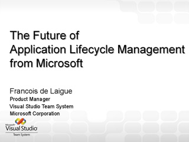

Keynote: Why Software Sucks, and What You Can Do About It
Speaker(s): David Platt

WCF and WF: Integrating Two Key Technologies of .NET 3.5

 Speaker(s): Ingo Rammer
Speaker(s): Ingo Rammer
Five Cool Things to Know and Use for Smart Client Development
 Speaker(s): Daniel Moth
Speaker(s): Daniel Moth
Data Protection with .NET Frame-work 3.5 and Cryptography Next Generation

 Speaker(s): Rafal Lukawiecki
Speaker(s): Rafal Lukawiecki
Instrumentation for Tracking User Experiences
Speaker(s): David Platt

Build More Intelligent Applications Using Data Mining
Speaker(s): Rafal Lukawiecki
Leveraging C#3.0 and LINQ (Best Practice)

 Speaker(s): Krishnan Subramanian
Speaker(s): Krishnan Subramanian

Building a Silverlight Application - End to End
Speaker(s): Peter Himschoot
WCF on the Web: Using REST and JSON with WCF
 Speaker(s): Peter Himschoot
Speaker(s): Peter Himschoot


Building a Distributed Solution with WCF and WF: In Action
 Speaker(s): Christian Weyer
Speaker(s): Christian Weyer


Connect Your WCF Services with the Internet Service Bus
Speaker(s): Christian Weyer
Model Driven Development, Smart Use Cases, Domain Objects and Silverlight
Speaker(s): Sander Hoogendoorn


VSX: Extend Your Visual Studio
 Speaker(s): Jean-Marc Prieur, James K. Lau
Speaker(s): Jean-Marc Prieur, James K. Lau


What's New in Visual Studio Team System 2008
 Speaker(s): Marcel de Vries
Speaker(s): Marcel de Vries
Building RIAs for WSS 3.0 and MOSS 2007

 Speaker(s): Patrick Tisseghem
Speaker(s): Patrick Tisseghem
Developing for CRM 4.0: Beyond the Obvious

 Speaker(s): Bas van Atteveldt
Speaker(s): Bas van Atteveldt
Integratie met WCF, WF en Dynamics CRM 4.0

 Speaker(s): Arthur van Adrichem, Steven Brom
Speaker(s): Arthur van Adrichem, Steven Brom
What's New (and Cool) for Developers in SQL Server 2008

 Speaker(s): Peter ter Braake
Speaker(s): Peter ter Braake


Make Your SharePoint Shine with Silverlight

 Speaker(s): Reinhard Brongers, Donald Hessing
Speaker(s): Reinhard Brongers, Donald Hessing
Developing Document-centric Solutions using Open XML and VSTO V3

 Speaker(s): Wouter van Vugt
Speaker(s): Wouter van Vugt
Team Development with Visual Studio Team System 2008

 Speaker(s): Francois de Laigue
Speaker(s): Francois de Laigue
Software Kwaliteit Verhogen door Beter te Testen met VSTS
 Speaker(s): Pieter de Bruin
Speaker(s): Pieter de Bruin
The Future of Application Lifecycle Management from Microsoft

Speaker(s): Francois de Laigue
How to Use Open XML to Represent Business Data
 Speaker(s): Wouter van Vugt
Speaker(s): Wouter van Vugt


Visual Studio Team System Code Name "Rosario"
 Speaker(s): Marcel de Vries
Speaker(s): Marcel de Vries